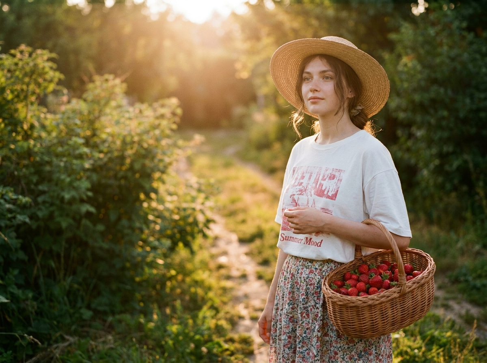
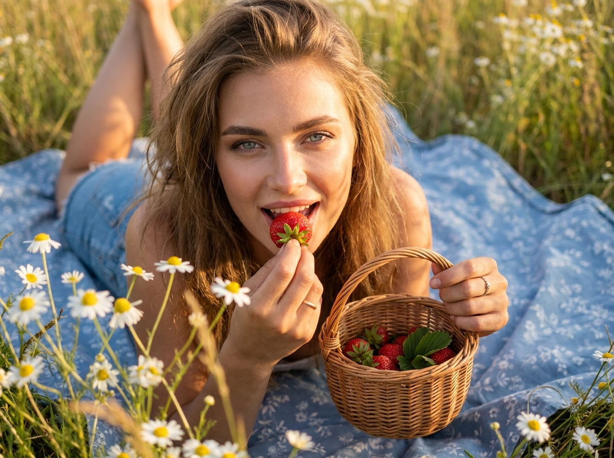
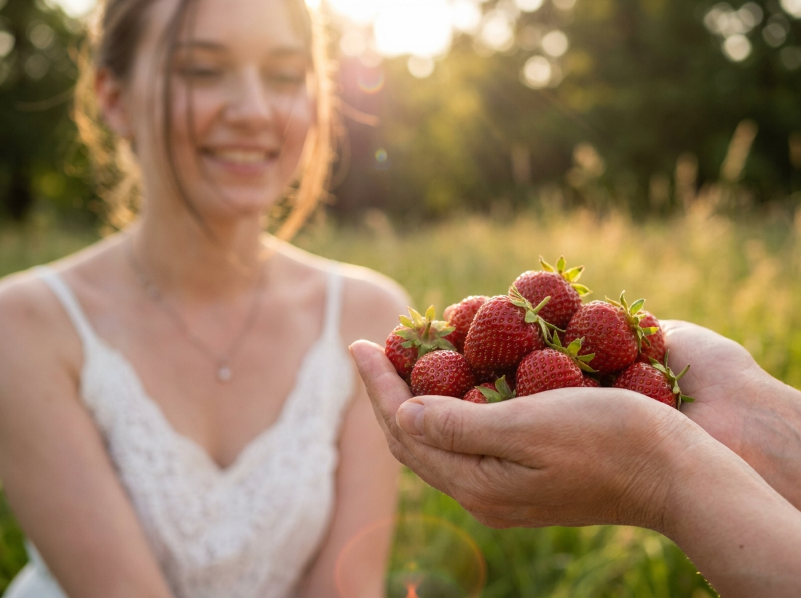
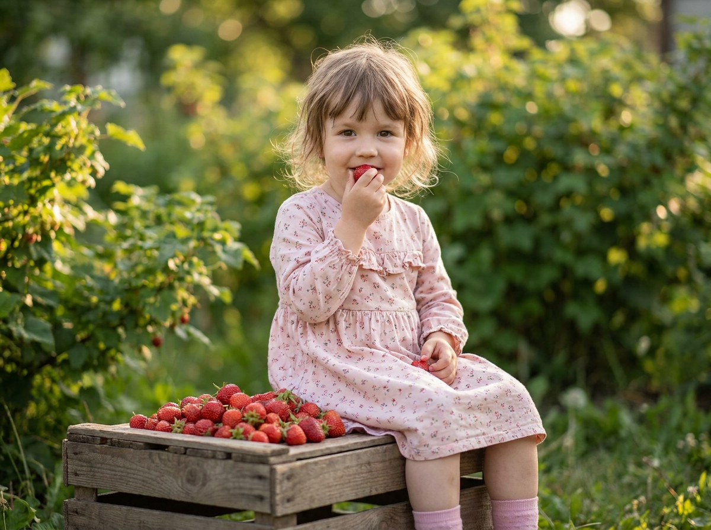
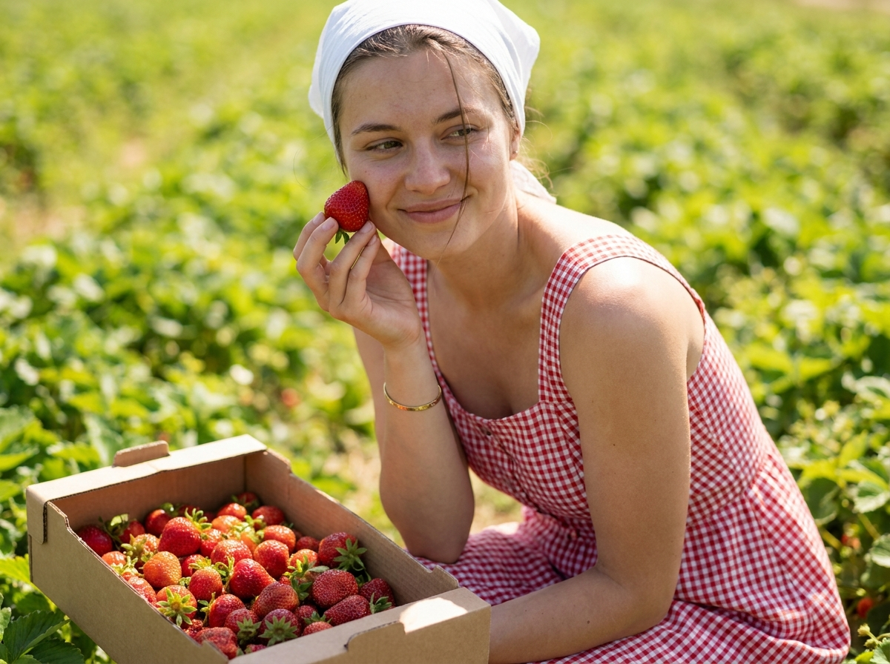
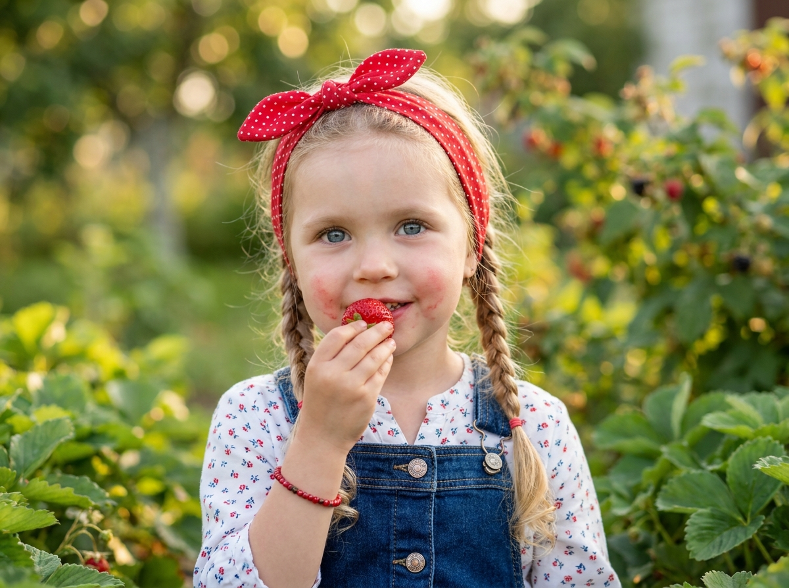
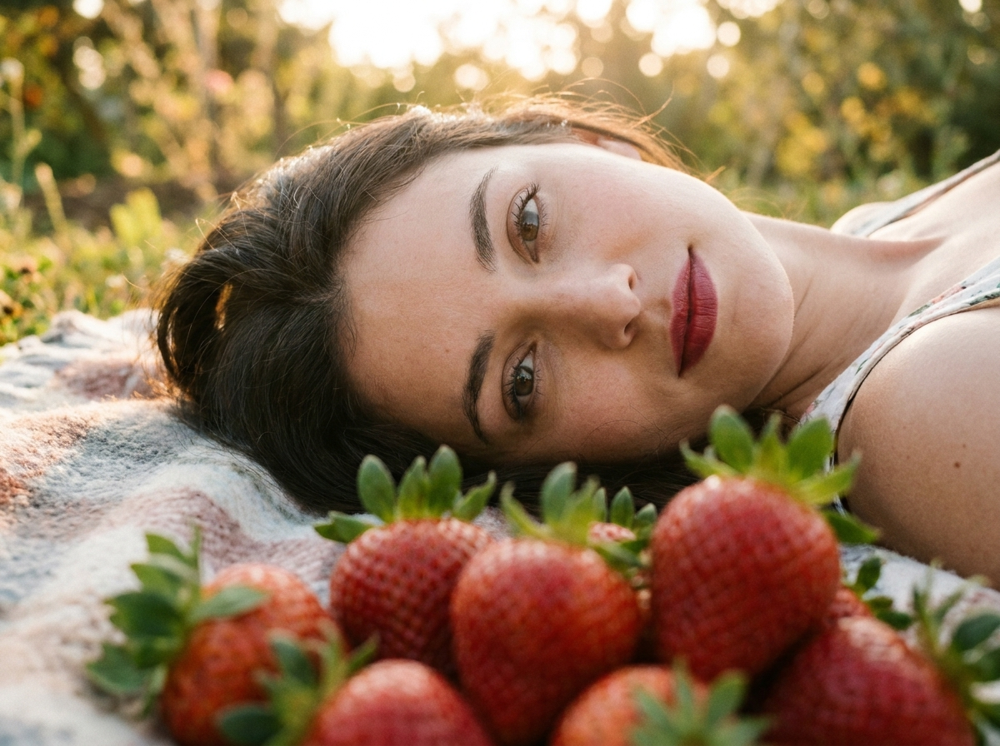
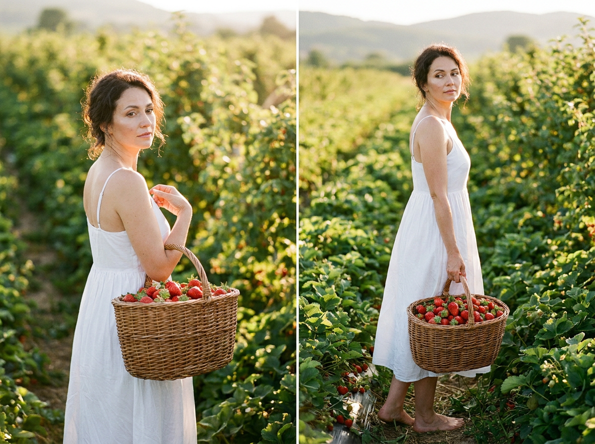
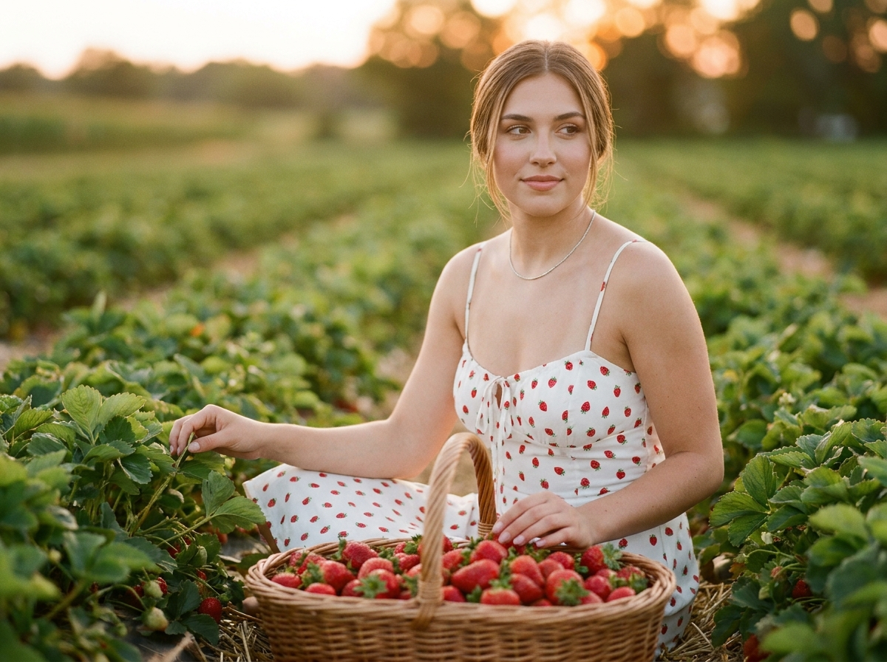
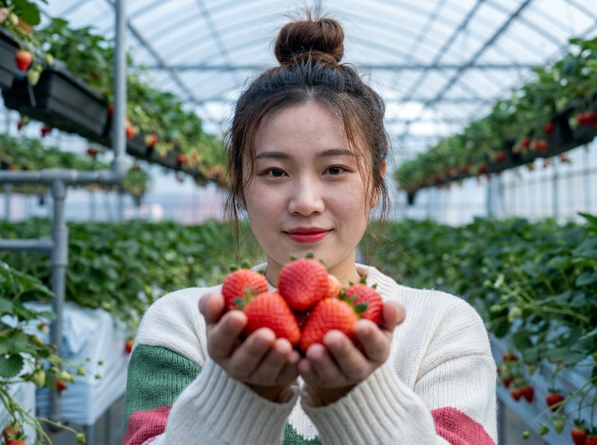

ИИ-фото с клубникой: 10 промптов для нейросети

Обычный снимок с клубникой легко превращается в случайный натюрморт: ягоды теряют форму, руки выглядят неестественно, а лицо становится непохожим на исходное. Генерация помогает собрать нужное настроение, свет и композицию ещё до съёмки.
В подборке — 10 готовых сценариев: от винтажного сада и пикника на пледе до портрета в клубничном поле и кадра в теплице. Каждый промпт можно использовать как основу и адаптировать под свой референс.
Как сгенерировать такое фото: пошагово
Нужен снимок анфас при ровном свете, лицо в кадре целиком, без тёмных очков и головных уборов. Разрешение от 1000 пикселей по короткой стороне. Чем чётче исходник, тем точнее модель повторит черты.
Выберите сценарий ниже и нажмите «Копировать» — текст уйдёт в буфер целиком, вместе с командой сохранения внешности. Эта команда стоит первой строкой и отвечает за то, чтобы на выходе было ваше лицо, а не случайное.
Кнопка «Сгенерировать» рядом с каждым промптом открывает модель в новой вкладке. Nano Banana Pro работает с референсом лица — в отличие от моделей, которые генерируют портрет с нуля и узнаваемость теряют.
Промпт — в поле ввода, портрет — через загрузку референса. Порядок значения не имеет, но без референса команда сохранения внешности работать не будет: модели нечего сохранять.
Для сторис и ленты берите 9:16, для превью и обложек — 4:3. Первый результат редко идеален: если поза или свет ушли не туда, поправьте соответствующую часть промпта и запустите заново. Обычно хватает двух-трёх итераций.
10 промптов для генерации
1. Винтажный сад на закате
Строго сохранить внешность по загруженному референсу: черты лица, пропорции, мимику и текстуру кожи без изменений. Кинематографичный фотореалистичный кадр с настроением vintage summer. В саду на закате молодая девушка стоит в развороте 3/4, глаза полузакрыты, выражение лица расслабленное и мечтательное. В руках у неё плетёная корзина, доверху наполненная спелой красной клубникой: хорошо различимы семена, зелёные чашечки, влажный естественный блеск. На девушке свободная белая хлопковая футболка oversize с клубничной графикой и винтажными надписями «Summer Mood» и стилизованным текстом в духе «SUPER MARKET». На голове кремово-бежевая соломенная или тканевая шляпа с широкими полями. Тёплый вечерний контровой свет, мягкие тени, плёночное зерно, малая глубина резкости, объектив 50 мм, f/2.8, вертикальный кадр 4:5, высокая детализация кожи и ткани.
2. Пикник с ягодой у губ

Строго сохранить внешность по загруженному референсу: черты лица, пропорции, мимику и текстуру кожи без изменений. Фотореалистичная летняя сцена на голубом хлопковом пледе с неброским узором, лежащем среди травы, ромашек и белых полевых цветов. Молодая девушка со слегка растрёпанными прядями смотрит в камеру и улыбается с лёгкой уверенностью; макияж мягкий, кожа натуральная, голубые глаза выразительные. Она подносит к губам крупную красную клубнику, будто собирается откусить её в следующую секунду. На ягоде видны семена, зелёная чашечка и фактура поверхности. В другой руке девушка держит ротанговую корзинку с несколькими ягодами разного размера. На заднем плане заметны поднятые ноги и колени, часть тела уходит в размытие. Солнечный дневной свет, объектив 35 мм, f/2.2, малая глубина резкости, естественная анатомия рук, вертикальный формат 4:5.
3. Горсть клубники крупным планом

Строго сохранить внешность по загруженному референсу: черты лица, пропорции, мимику и текстуру кожи без изменений. Кинематографичный фотореалистичный кадр на улице в золотой час. На переднем плане доминируют расслабленные женские руки, сложенные чашей: пальцы слегка согнуты, видны естественные складки кожи и мягкие тёплые блики. В ладонях лежит горсть спелой красной клубники разного размера; ягоды частично перекрывают друг друга, на каждой читаются зелёные чашечки и семена. Позади, в мягком боке, стоит молодая взрослая женщина в белом летнем платье из лёгкой ткани с кружевной или драпированной деталью у выреза. На шее небольшое украшение, у лица выбились пряди, губы приоткрыты в улыбке, но глаза не попадают в фокус. Фокусное расстояние 85 мм, f/2, тёплый рассеянный свет, вертикальный кадр 4:5, реалистичная текстура кожи.
4. Детство среди спелых ягод

Строго сохранить внешность по загруженному референсу: черты лица, пропорции, мимику и текстуру кожи без изменений. Трогательная фотореалистичная фотография маленькой девочки в летнем саду при мягком дневном освещении. Она стоит или полусидит на деревянном ящике, заполненном ярко-красной спелой клубникой; рядом видны детали плетёной корзины или контейнера с ручками. Девочка слегка развёрнута к камере, её выражение сосредоточенное или радостное, одна рука поднесена к губам, у рта находится клубника с зелёной чашечкой и заметной фактурой. Волосы аккуратно уложены, но отдельные пряди и пушок выглядят естественно, будто ребёнок только что двигался. На ней светло-розовое короткое платье с мелким цветочным рисунком. Летняя зелень на фоне, объектив 50 мм, f/2.8, мягкое размытие заднего плана, натуральные детские пропорции, вертикальный формат 4:5.
5. Девушка на клубничной грядке

Строго сохранить внешность по загруженному референсу: черты лица, пропорции, мимику и текстуру кожи без изменений. Candid outdoor, фотореалистичный кадр в ухоженном клубничном поле. Молодая взрослая девушка сидит или присела прямо у грядки, естественно улыбается и смотрит на ягоду, которую подносит к лицу. Волосы частично закрывают щёку и падают на грудь. На голове белая лёгкая косынка, повязанная вокруг темени; ткань мягко драпируется. Девушка одета в красно-белое платье в мелкую клетку: округлый вырез, короткие рукава, сборка по талии, хлопковая фактура и небольшие складки. На запястье тонкий минималистичный браслет. Вторая рука осторожно касается листьев, на переднем плане видны ягоды разной спелости, зелёные листья и земля между рядами. Естественный дневной свет, объектив 50 мм, f/2.5, реалистичная кожа, вертикальное соотношение 4:5.
6. Портрет с ягодным соком

Строго сохранить внешность по загруженному референсу: черты лица, пропорции, мимику и текстуру кожи без изменений. Крупный фотореалистичный портрет маленькой девочки по плечи, снятый на улице среди садовой клубничной грядки в ясный летний день. Девочка находится в центре, подносит к губам спелую красную ягоду; хорошо видны зелёная чашечка, семена и естественный блеск клубники. На щеках остаются лёгкие розово-красные следы сока, будто она только что пробовала ягоду. Большие выразительные голубые глаза, приоткрытые губы, мягкая детская улыбка и мечтательное настроение. На голове красная косынка в белый горошек с узлом или бантом, волосы заплетены в две косы вдоль плеч. Белая рубашка или платьице украшена мелким цветочным узором. Мягкий фон с листьями в боке, объектив 85 мм, f/2, натуральная текстура кожи, вертикальный кадр 4:5.
7. Красные ягоды перед объективом

Строго сохранить внешность по загруженному референсу: черты лица, пропорции, мимику и текстуру кожи без изменений. Кинематографичный фотореалистичный крупный план взрослой девушки, лежащей на мягкой поверхности с видом на сад или поле. Голова слегка наклонена, лицо повернуто к камере, глаза открыты и спокойно смотрят прямо в объектив. Выражение нежное, кожа с тёплым оттенком и естественной текстурой, макияж аккуратный, ресницы подчёркнуты, губы покрыты яркой красной помадой. В нижней части кадра, почти у объектива, лежит плотная россыпь крупных спелых клубник; ягоды перекрывают друг друга, на них различимы семена, зелёные чашечки и маленькие листочки. Передний план слегка выходит из фокуса, лицо остаётся главным резким объектом. Портретный объектив 85 мм, f/1.8, мягкий дневной свет, вертикальное соотношение 4:5, реалистичная цветопередача.
8. Босиком среди клубничных рядов

Строго сохранить внешность по загруженному референсу: черты лица, пропорции, мимику и текстуру кожи без изменений. Фотореалистичный кинематографичный кадр в клубничной плантации, вертикальная композиция в полный рост. В центре стоит взрослая девушка в лёгком белом хлопковом сарафане на тонких бретелях; ткань свободно струится, на ней видны естественные складки. Девушка слегка повёрнута, смотрит через плечо в сторону, а не прямо в объектив, выражение спокойное и задумчивое. Она босая, стопы полностью видны и естественно стоят между рядами. В руках — овальная плетёная корзина из ротанга или ивы с ручкой, наполненная красной клубникой разного размера, зелёными чашечками и листьями. Вокруг густая зелень и аккуратные грядки, солнечный рассеянный свет, лёгкий ветер в ткани и волосах. Объектив 35 мм, f/4, натуральная перспектива, вертикальный формат 2:3.
9. Сумеречный портрет в поле

Строго сохранить внешность по загруженному референсу: черты лица, пропорции, мимику и текстуру кожи без изменений. Фотореалистичный портрет в клубничном поле на мягком закатном свете. Молодая взрослая женщина сидит или полусидит среди грядок, корпус слегка развёрнут вправо, взгляд направлен в камеру, на лице расслабленная полуулыбка. Волосы разделены центральным пробором и свободно спадают на плечи. На ней тонкий белый сарафан на бретелях с мелким принтом красных клубничек, ткань лёгкая, с мягкими складками. На шее тонкая цепочка с небольшим медальоном. Одной рукой женщина касается куста или осторожно отводит листья, чтобы показать ягоды. Тёплый рассеянный golden hour, нежные тени, реалистичный тон кожи, фон с мягким размытием. Объектив 50 мм, f/2.2, высокая детализация ягод и ткани, вертикальный кадр 4:5.
10. Ягоды в ладонях теплицы

Строго сохранить внешность по загруженному референсу: черты лица, пропорции, мимику и текстуру кожи без изменений. Кинематографичный фотореалистичный кадр внутри клубничной теплицы. Девушка стоит среди рядов растений на подвесных стеллажах и протягивает обе руки к камере, показывая в ладонях 5–8 спелых красных ягод. Клубника находится очень близко к объективу: края слегка размыты глубиной резкости, центральные плоды остаются читаемыми, видны семена, зелёные чашечки и натуральный блеск. Кисти анатомически корректные, пальцы естественно согнуты, без лишних или деформированных фаланг. На втором плане — зелёные листья, подвесные сетки, ящики, трубы и провода теплицы. Девушка смотрит на ягоды с мягкой улыбкой, одежда простая и летняя, лицо и кожа реалистичные. Объектив 35 мм, f/2.8, дневной свет через прозрачное покрытие, вертикальный формат 4:5.
Что важно учесть в этом стиле
У клубничных кадров есть два главных центра внимания: лицо и ягода. Если описать только настроение, нейросеть может сделать плод бесформенным или заменить его малиной. Указывайте цвет, зелёную чашечку, семена, размер и положение ягоды в кадре.
Для портрета задавайте фокусное расстояние и диафрагму: 85 мм и f/1.8 дадут мягкий фон, а 35 мм и f/4 оставят больше деталей сада или теплицы. Для референса лица лучше отдельно прописать естественную текстуру кожи, мимику и отсутствие пластиковой ретуши.
Идеи для вариаций
- Замените закатный свет на пасмурное утро после дождя.
- Добавьте стеклянную банку с клубничным лимонадом и клетчатую скатерть.
- Попросите сделать кадр в эстетике плёночной камеры с датой в углу.
- Перенесите сцену на фермерский рынок с деревянными ящиками.
- Сделайте макросъёмку одной ягоды с каплями воды и мягким боке.
- Поменяйте одежду на голубой сарафан, льняную рубашку или ретро-комбинезон.
Как собрать свой промпт
Начните с типа изображения и героя: портрет, кадр в полный рост, сцена с ребёнком или предметная съёмка. Затем задайте действие, локацию, одежду и эмоциональное состояние. После этого опишите клубнику отдельно: количество ягод, их размер, цвет, листья, семена и место относительно объектива.
В финале добавьте свет и технику: golden hour или мягкий дневной свет, объектив 50 мм, диафрагма f/2.8, вертикальный формат 4:5. Если результат распадается, не переписывайте всё сразу: меняйте по одному параметру и делайте 4–6 попыток, сравнивая композицию.
Ошибки, из-за которых кадр не получается
- Слишком много объектов. Когда в одном запросе есть поле, теплица, пикник, корзины и несколько героев, модель теряет главный акцент.
- Нет указания на фокус. Уточняйте, что должно быть резким: лицо, ягода в руках или передний план.
- Руки описаны общими словами. Для сложных жестов задавайте положение ладоней, число ягод и естественный изгиб пальцев.
- Текст на одежде задан слишком жёстко. Надписи часто искажаются, поэтому лучше просить винтажную типографику и короткие слова.
- Не задан формат. Без вертикального соотношения сторон модель может собрать композицию, неудобную для поста или обложки.
Частые вопросы
Как сделать такое ИИ-фото бесплатно?
Попробуйте Kandinsky и Шедеврум: у них есть бесплатная генерация, но число попыток и доступные настройки могут меняться. Krea AI и Arena.ai позволяют тестировать генерацию, однако бесплатный режим обычно ограничен очередью, скоростью или количеством запросов. Работа с референсом лица поддерживается не во всех режимах: результат может заметно изменить черты, поэтому понадобится несколько вариантов и аккуратное описание внешности.
Как сохранить лицо по загруженному референсу?
Загрузите чёткий портрет без сильных фильтров, где хорошо видны глаза, нос и овал лица. В промпте уточните, что нужно сохранить индивидуальные черты, естественную мимику и пропорции, а затем не меняйте одновременно ракурс, возраст и выражение. Даже при этом нейросеть может немного переосмыслить внешность.
Почему клубника получается похожей на помидор?
Добавьте признаки ягоды: небольшая коническая форма, мелкие семена на поверхности, зелёная чашечка сверху, красный цвет и лёгкий блеск. Полезно указать несколько ягод разного размера и попросить крупный план с хорошо читаемой текстурой.
Как получить реалистичные руки с клубникой?
Опишите позу кистей буквально: ладони сложены чашей, пальцы слегка согнуты, в руках 5–8 ягод, часть плодов перекрывается. Укажите естественную анатомию и отсутствие лишних пальцев. Если артефакты остаются, сначала сгенерируйте сцену с одной ягодой, а затем усложняйте композицию.